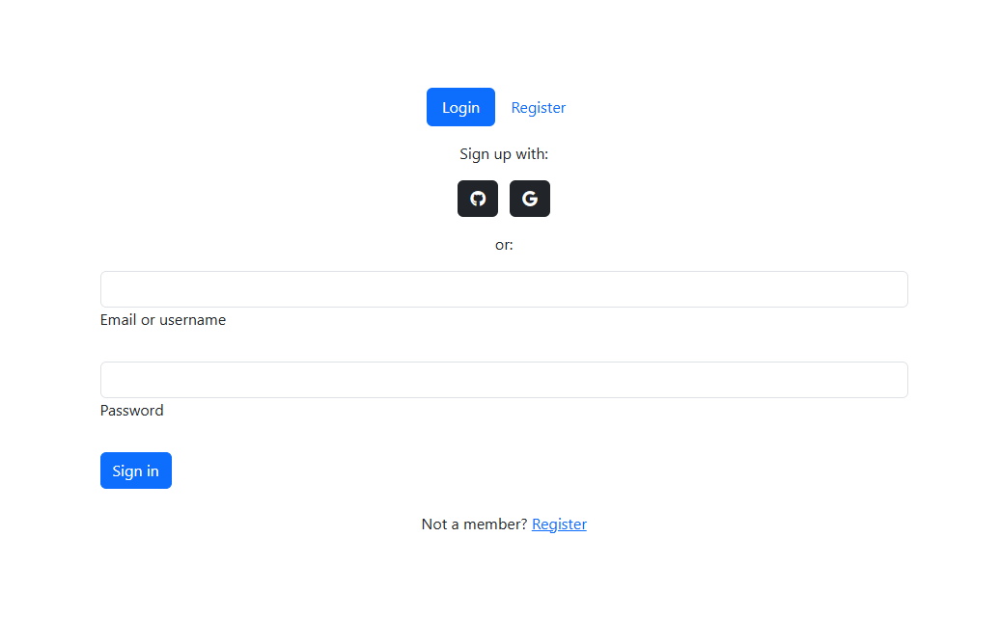
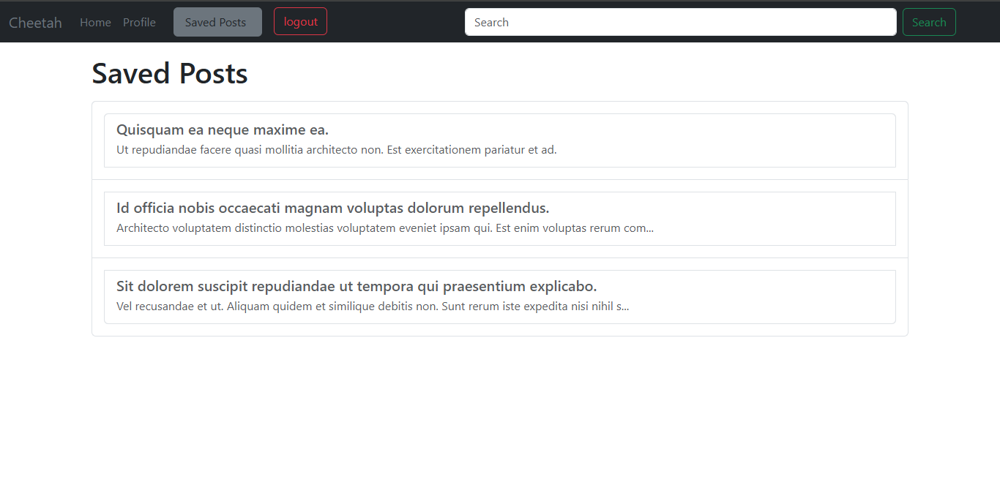
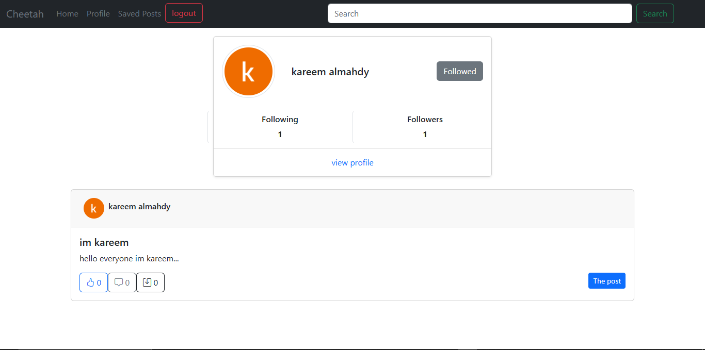

Project Summary
Cheetah is a social media web application I built to understand how real platforms work behind the scenes. It includes authentication, user profiles, posts, likes, comments, saved posts, search, and user interaction features. The project helped me move beyond building static pages and start thinking in terms of full systems: users, database relationships, request flow, frontend-backend communication, and real interaction between different parts of the application. Cheetah is one of the projects I’m most proud of because it represents my transition from learning individual concepts to building a complete web application with real social media logic.
Home Feed Experience
The Home Feed is the main experience of Cheetah, where users can explore posts,
interact with content, and stay connected with the community. I built this page
to simulate the core behavior of modern social media platforms, including post
cards, user information, likes, comments, saves, and a clean navigation system.
This part helped me understand how social platforms organize content, handle user
interactions, and display dynamic data in a structured and readable way.

Authentication System
Cheetah includes a full authentication flow that allows users to log in or register
before accessing the platform. The goal was to create a simple and clear entry point
for users while preparing the system to handle protected pages and user-based actions.
Working on this part helped me understand authentication logic, user sessions, form
handling, validation, and how the application controls access between public and
private pages.
User Profile Dashboard
The Profile page gives each user a personal space inside the platform. It displays
the user’s information, profile image, followers, following count, and personal posts.
It also includes the ability to update profile data, making the experience more
personalized and practical.
This feature helped me work with user-specific data, profile management, relational
data, and dynamic content connected to the logged-in user.

Saved Posts System
The Saved Posts page allows users to keep important posts in one place and access
them later. This feature was designed to improve the user experience by giving users
more control over the content they care about.
Building this part helped me understand how to connect user actions with database
records, manage saved content, and display personalized results based on each user’s
activity.

Search and User Discovery
Cheetah also includes a search and discovery feature that allows users to find other
profiles and explore their public activity. The search result page shows user cards,
follow status, profile links, and related posts.
This feature helped me understand how search functionality works inside a real
application, how to filter data, display relevant results, and create connections
between users through follow and profile-view actions.
Cheetah App